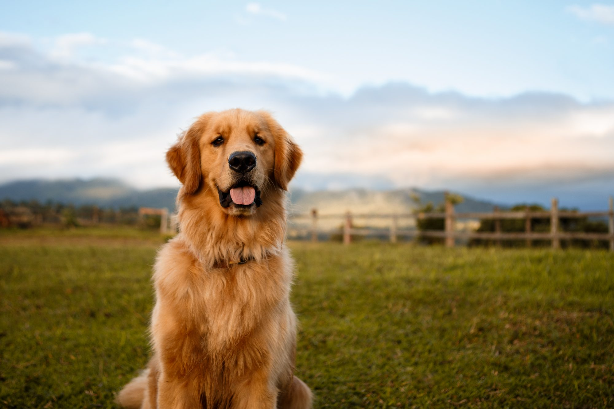

DOG

A dog is a domesticated carnivorous mammal that typically has a long snout, an acute sense of smell, non-retractable claws, and a barking, howling, or whining voice.
Dog, (Canis lupus familiaris), domestic mammal of the family Canidae (order Carnivora).
Class: Mammalia.
Habitat: Forests and brush lands.
Lifespan: 10-13 years.
Diet:Cooked or raw meat, fish, vegetables and rice.
The dog is a domesticated descendant of the wolf.
Also called the domestic dog, it is derived from extinct Pleistocene wolves, and the modern wolf is the dog's nearest living relative.